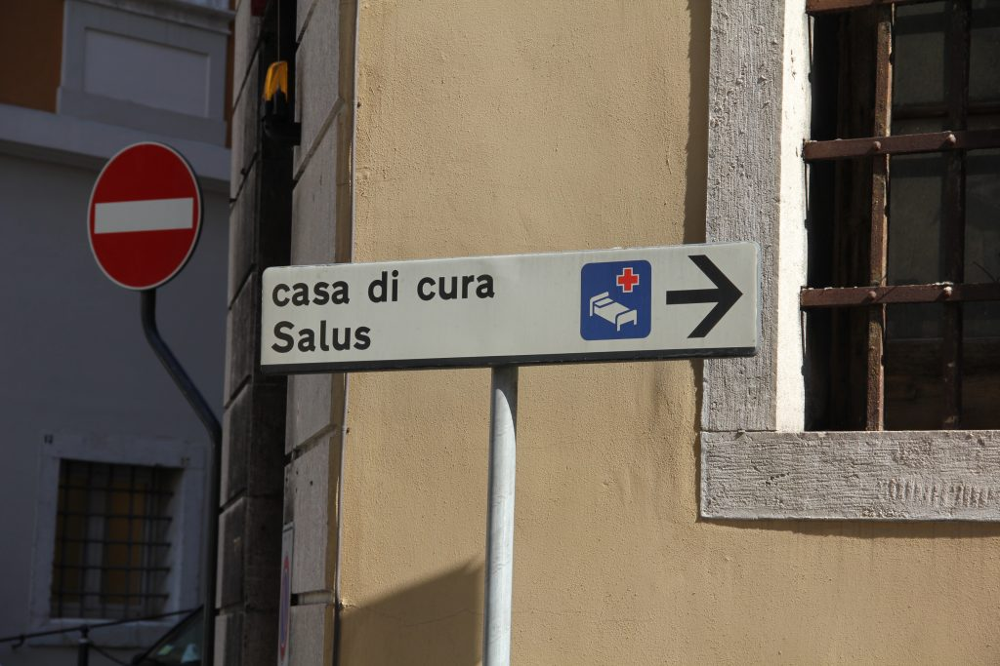
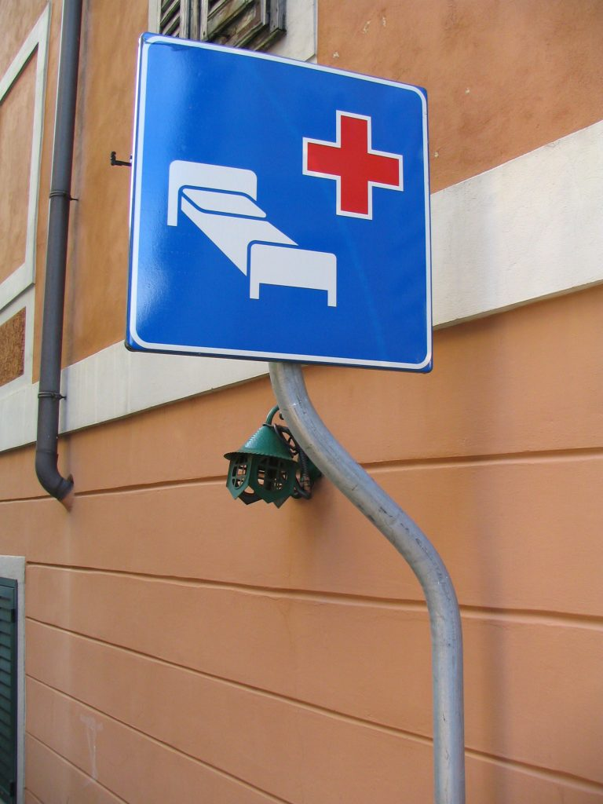

In Italy, public hospitals are the norm. They are good institutions with good doctors (
dottori), however the quality of service, and I mean the “guest” service not the health service, may not be the same as the hospitals in the United States. For example, most of the time there are no private rooms, but only rooms that are shared by 2 or more people (sometimes they can accommodate up to 8 people). And quite often the buildings themselves are historical constructions that originally weren’t even intended to be health institutions, therefore they present obvious architectural limitations. Take the Venice’s Ospedale Civile for example. Built in 1675 it was the convent of the nearby Basilica dei SS. Giovanni e Paolo.
Photo by G. Dall'Orto via Wikimedia
Private hospitals (
ospedali privati) or clinics (
cliniche private or
case di cura privata) offer services that are closer to the American ideal and have private rooms, but obviously are more expensive.

Casa di cura sign (Photo by paolo Tosolini)
Both public hospitals and clinics are recognizable by the International sign of a red cross on a blue background, and both offer the same quality of medical treatment.

Hospital sign (Photo by Paolo Tosolini)
{This is an excerpt from chapter 8 “Hospitals and pharmacies
” of the eBook “
Italy from the Inside. A native Italian reveals the secrets of traveling in Italy”}